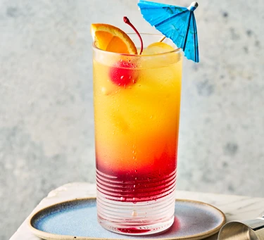

Tequila sunrise

Description
Master the art of a classic tequila sunrise,
with grenadine, tequila, triple sec, orange juice - and of course a cocktail cherry and umbrella as garnish
Ingredients
- 2 tsp grenadine
- ice
- 50ml tequila
- 1 tbsp triple sec
- 1 large orange
- ½ lemon
- 1 cocktail cherry
Steps
- Pour the grenadine into the base of a tall glass and set aside.
Fill a cocktail shaker with ice and add the tequila, triple sec and fruit juices. Shake until the outside of the shaker feels cold.
- Add a few ice cubes to the serving glass then carefully double strain the cocktail into it,
trying not to disturb the grenadine layer too much.
Add more ice if needed to fill the glass then garnish with a cherry on a stick or cocktail umbrella.
Home